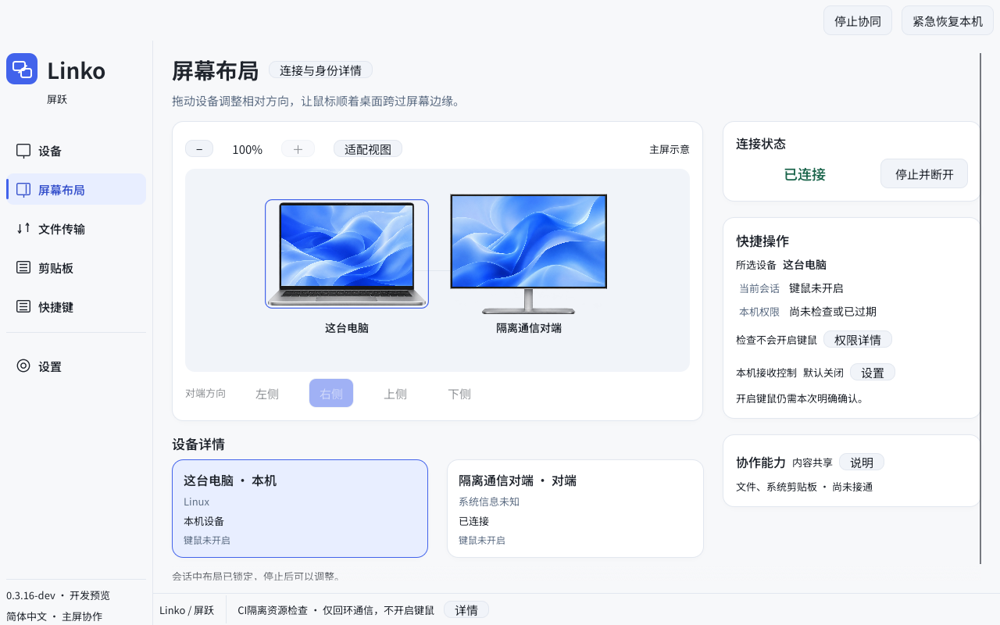

用短码核验彼此
一端显示配对码，另一端输入。双方分别确认记住设备，核验完成也不会自动开启键鼠。
为 Windows 与 macOS 的局域网协同而做。
连接彼此，摆好主屏，让工作在熟悉的两台电脑之间继续。
当前为开发预览，此前真实试跑已连接但不能跨屏，修复候选尚未完成双机重测。
设备、方向、下一步，都在同一个工作区。

协作，讲清楚每一步
设备核验、屏幕方向和使用许可分别处理。以下流程已在开发版实现；真实双机兼容性仍在验证。
一端显示配对码，另一端输入。双方分别确认记住设备，核验完成也不会自动开启键鼠。
左、右、上、下，选择另一台电脑所在的方向。当前范围是两台电脑、每台一个主显示器。
本机是否接收控制，由本机独立设置。检查系统权限后，仍需明确确认本次键鼠协同。
固定的停止、紧急恢复入口与快捷键。恢复未确认时保留提示，并阻止新的键鼠会话。
从两台电脑开始
先核验，再摆放，最后决定是否开启键鼠。
连接同一 Wi-Fi 或局域网。任选一端显示配对码，另一端输入；两边分别确认记住设备。
记住设备 ≠ 开启控制按桌面上的实际位置摆好方向。另一端设置相反方向；示意布局不代表真实屏幕尺寸。
两台电脑 · 四个相对方向确认两端的接收选择，检查实际使用程序的权限，再明确开启本次键鼠协同。
Ctrl + Alt + Esc 请求紧急恢复公开说明进度
Linko 正在逐项验证协作能力。界面与流程已实现，不代表已完成真实双机验收。
状态更新：2026-11-09 · 查看完整功能状态与剩余范围 ↗
真实双机跨屏尚未通过；键盘、DPI 与故障恢复矩阵仍待验收。
0.3.20-dev 已有切换竞争修复和新品牌，尚未公开发布；V2 排版未完整落地。
全局 G1、系统剪贴板和文件收发尚未接通。
参与开发预览
目前没有正式稳定版。开发包适合愿意参与验证的用户；真实双机验收尚未完成。
请选择你的电脑系统。所有平台入口均保留，可手动下载。
macOS 实验构建，保留完整应用包使用。
下载开发预览Windows 便携开发包，解压后保留包内文件。
下载开发预览免登录直接下载。GitHub 原链与第三方代理入口均保留。加速入口使用 gh-proxy.org，不经过本站下载服务器；可用性和速度由第三方决定，请核对 SHA-256。开发包尚未完成正式签名与 macOS 公证；请保留系统安全防护。
Linux 当前仅支持通信与界面诊断，尚无原生键鼠支持。查看 Linux 诊断构建（需登录）↗
目前仍是开发预览。真实 Windows ↔ macOS 键鼠、不同 DPI、权限变化和恢复行为还在验收中。请先在可中断的场景验证，不把开发进度当作稳定可用的承诺。
Linko 面向 Windows 与 macOS 的局域网协同。当前首版范围是两台电脑、每台一个主显示器；Linux 目前仅用于通信与界面诊断。真实跨系统键鼠体验仍在验证。
不会。设备登记与使用许可分别处理。本机是否接收对方控制，由本机单独选择；启动键鼠协同还需要权限检查与本次明确确认。连接成功也不会开放剪贴板或文件权限。
系统剪贴板、生产文件收发与原生文件跨屏拖拽尚未接通。音频、多屏、远程窗口、工作空间与移动控制仍是后续研究或规划，不是当前开发包的能力。
App 的局域网协作不需要应用账号。当前开发包通过 GitHub Releases 提供，免登录直接下载。公开版本与最新候选分别标明；入口不可用时请在项目问题页反馈。